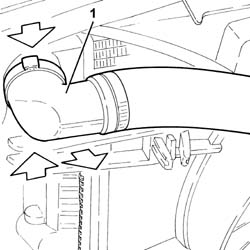
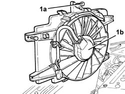
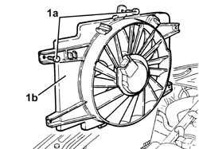

1088E10 radiator cooling fan - r + r
- Path
- Procedures > 10 ENGINE > 1088 ENGINE COOLING > 1088E coolant temperature control devices > 1088E10 radiator cooling fan - r + r
- Kind
- repair procedure (removal / refitting; the operation number is the code)
- Applies to
- engines: 1.6 TS, 2.0 TS, 1.9 JTD 8V, 1.9 JTD 16V; all production periods
- Interactive page
- https://sloeber94.github.io/elrnDB-a147/en/#/3024914
Applies to: engines: 1.6 TS; all production periods
 Removing
Removing
 Refitting
RefittingPosition the vehicle on the ramp.
Proceed with the removal 5530B10 battery - r+r .
Proceed with the removal 5530B52 Battery DRIP TRAY/SUPPORT - R.R. .
Proceed with the removal 1048A10 air cleaner filtering element - replace .
1. Disconnect the upper coolant inlet hose to the radiator.

Applies to: engines: 1.6 TS; all production periods
1. Undo the bolts (1a) and remove the complete radiator cooling fan (1b).

Applies to: engines: 1.6 TS; all production periods
Refitting
RemovingPlace the radiator cooling fan back in its housing and secure it using the bolts.
Connect the upper radiator coolant inlet hose.
Proceed with the refitting 1048A10 air cleaner filtering element - replace .
Proceed with the refitting 5530B52 Battery DRIP TRAY/SUPPORT - R.R. .
Proceed with the refitting 5530B10 battery - r+r .
Refill the engine cooling system 0010T20 coolant change .
Remove the car from the ramp.
Applies to: engines: 2.0 TS; all production periods
Removing
RefittingPosition the vehicle on the ramp.
Proceed with the removal 5530B10 battery - r+r .
Proceed with the removal 5530B52 Battery DRIP TRAY/SUPPORT - R.R. .
Proceed with the removal 1048A10 air cleaner filtering element - replace .
1. Disconnect the upper coolant inlet hose to the radiator.
Applies to: engines: 2.0 TS; all production periods
1. Undo the bolts (1a) and remove the complete radiator cooling fan (1b).
Applies to: engines: 2.0 TS; all production periods
Refitting
RemovingPlace the complete radiator cooling fan back in its housing and secure it using the bolts.
Connect the upper radiator coolant inlet hose.
Proceed with the refitting 1048A10 air cleaner filtering element - replace .
Proceed with the refitting 5530B52 Battery DRIP TRAY/SUPPORT - R.R. .
Proceed with the refitting 5530B10 battery - r+r .
Refill the engine cooling system 0010T20 coolant change .
Remove the car from the ramp.
Applies to: engines: 1.9 JTD 8V; all production periods
Removing
RefittingPlace the car on a ramp.
5530B52 Battery DRIP TRAY/SUPPORT - R.R. .
1048A10 air cleaner filtering element - replace .
1. Disconnect the upper coolant inlet hose to the radiator.
Applies to: engines: 1.9 JTD 8V; all production periods
1. Undo the bolts (1a) and remove the complete radiator cooling fan (1b).
Applies to: engines: 1.9 JTD 8V; all production periods
Refitting
RemovingPlace the complete radiator cooling fan back in its housing and secure it using the bolts.
Connect the upper coolant inlet hose to the radiator.
1048A10 air cleaner filtering element - replace .
5530B52 Battery DRIP TRAY/SUPPORT - R.R. .
Remove the car from the ramp.
Applies to: engines: 1.9 JTD 16V; all production periods
Removing
RefittingPosition the vehicle on the ramp.
Proceed with removal 7025A12 Engine front sound insulation COVER - R.R. .
Proceed with removal 7025A14 Bonnet LID - R.R. .
Proceed with removal 1016A10 sound-proofing cover - r + r .
Ensure that the ignition key is in the OFF position, then disconnect the negative battery terminal (-).
 | Name | Connector |
|---|---|---|
- | Battery |
Proceed with removal 7055B54 under-engine guard - r r .
Proceed with removal 5530B10 battery - r+r .
Proceed with removal 5530B52 Battery DRIP TRAY/SUPPORT - R.R. .
Proceed with removal 1048A10 air cleaner filtering element - replace .
1. Undo the bolts (1a) and remove the radiator cooling fan (1b).

Applies to: engines: 1.9 JTD 16V; all production periods
Refitting
RemovingPlace the radiator cooling fan back in its housing and secure it using the bolts.
Proceed with refitting 1048A10 air cleaner filtering element - replace .
Proceed with refitting 5530B52 Battery DRIP TRAY/SUPPORT - R.R. .
Proceed with refitting 5530B10 battery - r+r .
Proceed with refitting 7055B54 under-engine guard - r r .
Refill the engine cooling system with coolant 0010T20 coolant change .
Connect the negative (-) battery terminal.
Proceed with refitting 1016A10 sound-proofing cover - r + r .
Proceed with refitting 7025A14 Bonnet LID - R.R. .
Proceed with refitting 7025A12 Engine front sound insulation COVER - R.R. .
Remove the car from the ramps.
Topics linked from this page (9)
- 0010T20 coolant change
- 1016A10 sound-proofing cover - r + r
- 1048A10 air cleaner filtering element - replace
- 5530B10 battery - r+r
- 5530B52 Battery DRIP TRAY/SUPPORT - R.R.
- 7025A12 Engine front sound insulation COVER - R.R.
- 7025A14 Bonnet LID - R.R.
- 7055B54 under-engine guard - r r
- A1B Battery ( Connectors )